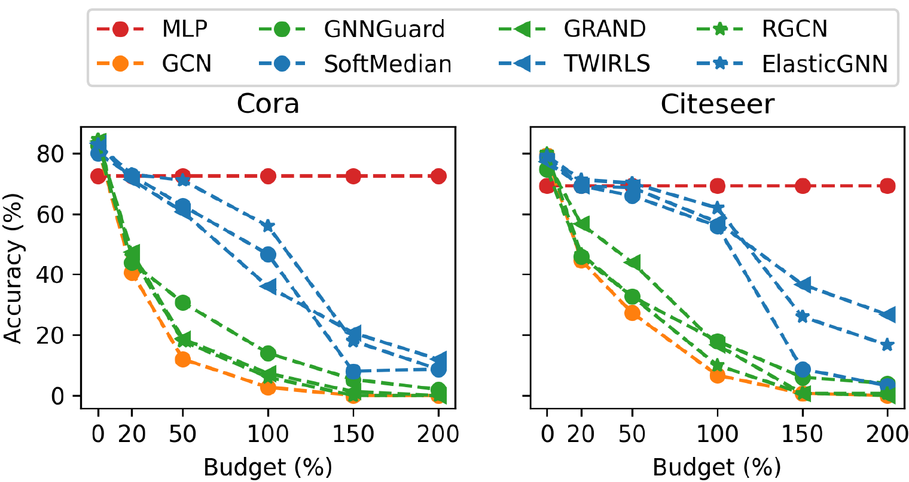
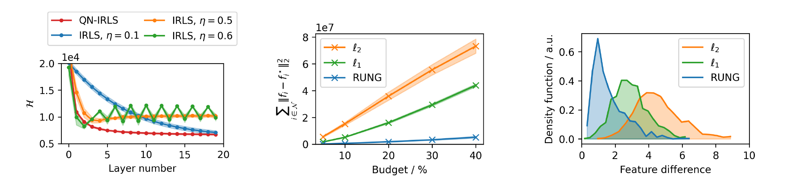

Robust Graph Neural Networks via Unbiased Aggregation
Under adaptive attacks, the strongest robust GNNs (SoftMedian, TWIRLS, ElasticGNN) all behave like one model: ℓ1 graph smoothing. ℓ1 resists a few bad edges, but its estimate is biased, and every adversarial edge adds to the bias.
RUNG swaps the ℓ1 penalty for an unbiased one (MCP) and solves the problem with a stepsize-free Quasi-Newton IRLS. Unrolled, each solver step is a GNN layer that reweights edges and cuts the ones connecting nodes with very different features. The demos below run that mechanism live in your browser.
Robust GNNs still fall below an MLP
We evaluated representative defenses under adaptive attacks, which target the victim model itself instead of a surrogate. Most defenses are barely more robust than an undefended GCN.
Three models stand out (blue curves): SoftMedian, TWIRLS and ElasticGNN. Their architectures look unrelated, yet their robustness curves nearly coincide. They also share the same failure: once the attacker can add more edges, they drop below the MLP, which never looks at the graph.
The reason is that all three approximately solve the same problem: graph signal smoothing with an ℓ1-type penalty on edge differences.

| Model | What it computes | Equivalent smoothing penalty |
|---|---|---|
| SoftMedian | Soft dimension-wise median of the neighbors | ∑j ‖fi − fj‖1 |
| TWIRLS | IRLS on a robust smoothing objective | ∑(i,j) ‖f̃i − f̃j‖2 |
| ElasticGNN | Proximal message passing (PAPC) | ∑(i,j) ‖fi/√di − fj/√dj‖p, p ∈ {1, 2} |
| GCN / APPNP | Weighted neighbor average | ∑(i,j) ‖fi/√di − fj/√dj‖22 (not robust) |
Every outlier pulls a little
Message passing estimates a node's feature from its neighbors, which is a mean estimation problem. Adversarial edges add outliers to that sample. Drag the outlier ratio and watch three estimators.
Mean estimation with outliers
The mean moves linearly with the outlier ratio. The ℓ1 median resists for a while and then drifts, because ℓ1 shrinks every difference by a constant. MCP stops counting a point once it is farther than γ, so its estimate stays put until the outliers are almost the majority.
A penalty that stops growing
RUGE, the Robust and Unbiased Graph signal Estimator, keeps the smoothing objective and replaces the edge penalty with the Minimax Concave Penalty ργ:
For small differences ργ behaves like ℓ1, so normal neighbors are smoothed together. Past γ it is flat: a neighbor that far away adds a constant cost and exerts no pull. That is where the bias goes away.
The right plot is what actually enters the GNN. Each IRLS step weights edge (i, j) by Wij = dρ/dy², which is exactly zero for y ≥ γ.
Penalty and edge weight
As γ → ∞, MCP becomes ℓ1. As γ → 0, it approaches ℓ0 and prunes almost every edge.
One solver step, one GNN layer
RUGE is non-smooth and non-convex. We solve it with Quasi-Newton IRLS, which approximates the Hessian by a diagonal matrix. That makes the update stepsize-free and guarantees the objective decreases every step (Theorem 2). Unrolling K steps gives K layers on top of an MLP:
Below, a two-class graph lives in a 2-D feature space: each dot is a node placed at its current feature fi(k), and the class is decided by which side of the dashed line it falls on. The attacker wires the eight ringed target nodes of class A to class-B nodes. Step through the layers and compare the three penalties.
Aggregation under attack, layer by layer
Edge opacity shows its weight Wij. Thin trails show how each target's feature moved through the layers.
Target accuracy vs. budget, 30 random graphs
The same toy setup over 30 random graphs, after 10 layers. Without an attack, all three graph models beat the MLP because neighbors correct noisy features. As the budget grows, ℓ2 is dragged along steadily, and ℓ1 collapses once adversarial neighbors outnumber clean ones. RUNG keeps the targets on their side.
Try a very small γ: RUNG then prunes clean edges too and falls back toward the MLP. A very large γ turns it into ℓ1. This is the trade-off studied in Appendix G of the paper.
About this toy. 60 nodes, 2-D features, 10 RUNG layers with λ̂ = 0.9, and a fixed attacker that links each target to the most extreme class-B nodes. It shows the mechanism only. The paper's numbers use adaptive PGD attacks on real datasets.
Robust at every budget, with clean accuracy intact
Adaptive global PGD attack on Cora ML. Accuracy (%) averaged over 5 splits; budget = % of all edges. The paper also covers Citeseer, Ogbn-Arxiv, transfer, poisoning and graph injection attacks.
| Model | Clean | 5% | 10% | 20% | 30% | 40% |
|---|---|---|---|---|---|---|
| MLP | 65.0 ± 1.0 | 65.0 ± 1.0 | 65.0 ± 1.0 | 65.0 ± 1.0 | 65.0 ± 1.0 | 65.0 ± 1.0 |
| GCN | 85.0 ± 0.4 | 75.3 ± 0.5 | 69.6 ± 0.5 | 60.9 ± 0.7 | 54.2 ± 0.6 | 48.4 ± 0.5 |
| APPNP | 86.3 ± 0.4 | 75.8 ± 0.5 | 69.7 ± 0.7 | 60.3 ± 0.9 | 53.8 ± 1.2 | 49.0 ± 1.6 |
| GNNGuard | 83.1 ± 0.7 | 74.6 ± 0.7 | 70.2 ± 1.0 | 63.1 ± 1.1 | 57.5 ± 1.6 | 51.0 ± 1.2 |
| SoftMedian | 85.0 ± 0.7 | 78.6 ± 0.3 | 75.5 ± 0.9 | 69.5 ± 0.5 | 62.8 ± 0.8 | 58.1 ± 0.7 |
| TWIRLS | 84.2 ± 0.6 | 77.3 ± 0.8 | 72.9 ± 0.3 | 66.9 ± 0.2 | 62.4 ± 0.6 | 58.7 ± 1.1 |
| TWIRLS-T | 82.8 ± 0.5 | 76.8 ± 0.6 | 73.2 ± 0.4 | 67.7 ± 0.4 | 63.8 ± 0.2 | 60.8 ± 0.3 |
| RUNG-ℓ₁ (ours) | 85.8 ± 0.5 | 78.4 ± 0.4 | 74.3 ± 0.3 | 68.1 ± 0.6 | 63.5 ± 0.7 | 59.8 ± 0.8 |
| RUNG (ours) | 84.6 ± 0.5 | 78.9 ± 0.4 | 75.7 ± 0.2 | 71.8 ± 0.4 | 67.8 ± 1.3 | 65.1 ± 1.2 |

BibTeX
@inproceedings{hou2024robust,
title = {Robust Graph Neural Networks via Unbiased Aggregation},
author = {Hou, Zhichao and Feng, Ruiqi and Derr, Tyler and Liu, Xiaorui},
booktitle = {Advances in Neural Information Processing Systems (NeurIPS)},
year = {2024}
}